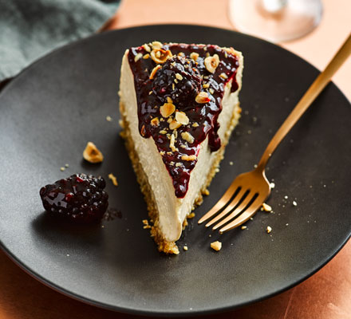

Chocolate hazelnut ice cream cheesecake

Best ever cheesecake
No one will guess that this easy, rich and creamy no-cook, make-ahead cheesecake uses only 4 ingredients - ideal for a dinner party
Ingredients
- 200g honey nut cornflakes
- 2 x 400g jars chocolate hazelnut spread
- 2 x 180g tubs full-fat cream cheese
- 1 tbsp roasted and chopped hazelnuts
Steps
- Put the cornflakes and half a jar of chocolate hazelnut spread in a bowl and beat to combine – don’t worry about breaking up the cornflakes. Press the mix into the base of a 23cm springform tin.
- In a separate bowl, beat the cream cheese until smooth, then fold in the remaining chocolate hazelnut spread. Smooth onto the cornflake base, wrap tightly in cling film and freeze overnight.
- Remove from the freezer 30 mins before serving, or until you can cut it easily with a sharp knife. Serve in slices with hazelnuts sprinkled over. Will keep in the freezer for up to 1 month.
Back